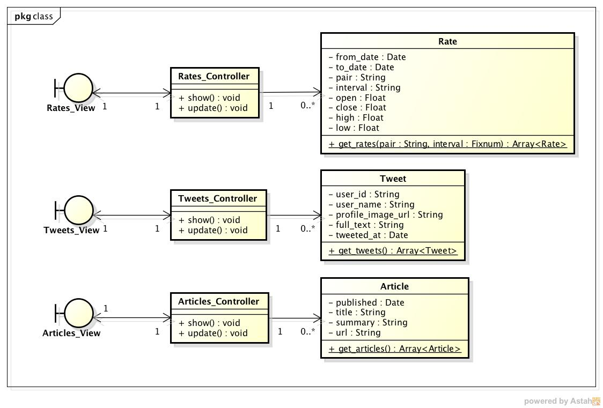
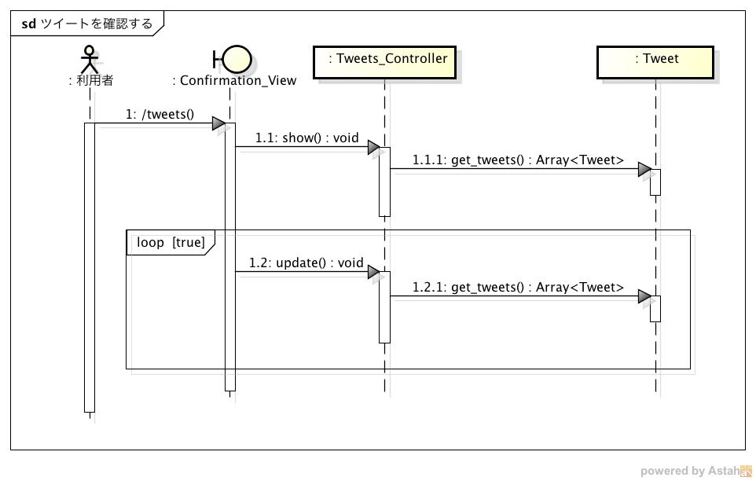
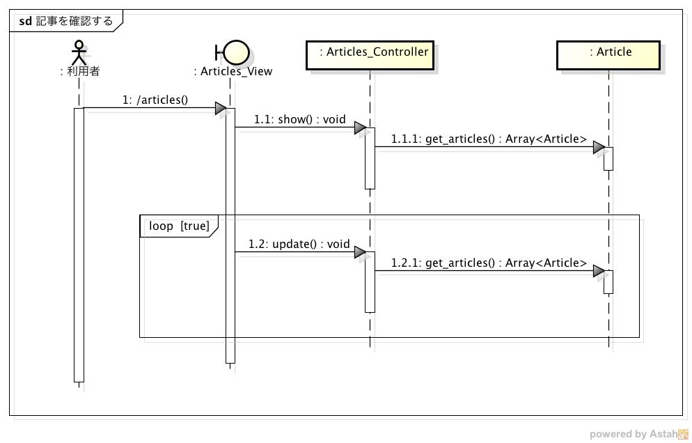

設計仕様¶
設計仕様では以下を定義する
モジュール構成¶
MVCモデルを利用する
クラス図
- Model
- Rate
- 為替レートを表すクラス
- 以下の情報を保持する
- from_date: 集計対象データの範囲（開始時刻）
- to_date: 集計対象データの範囲（終了時刻）
- pair: 為替のペアコード（例：USDJPY）
- interval: 集計対象期間
- 以下のいずれかが保持されている
- 5-min
- 10-min
- 20-min
- 30-min
- 1-hour
- 2-hour
- 3-hour
- 4-hour
- 6-hour
- 12-hour
- 1-day
- 1-week
- 1-month
- 以下のいずれかが保持されている
- open: 始値
- close: 終値
- high: 高値
- low: 安値
- Tweet
- ツイートを表すクラス
- 以下の情報を保持する
- tweet_id: ツイートのID
- user_name: ツイートのユーザー名
- profile_image_url: アカウントのプロフィール画像のURL
- full_text: ツイート本文
- tweeted_at: ツイート日時
- Article
- 記事を表すクラス
- 以下の情報を保持する
- published: 記事が発行された日時
- title: 記事のタイトル
- summary: 記事の要約
- url: 記事へのURL
- データベースには 外部スクリプト により定期的にレコードが追加される
- レート，ツイート・記事の情報を取得するスクリプトが定期的に実行されてMySQLに登録される
- Rate
- View
- Confirmation_View
- Webブラウザ上で表示する画面
- Confirmation_View
- Controller
- Rates_Controller
- Rateクラスのコントローラ
- Rateオブジェクトを取得し，ビューに表示する
- Tweets_Controller
- Tweetクラスのコントローラ
- Tweetオブジェクトを取得し，ビューに表示する
- Articles_Controller
- Articleクラスのコントローラ
- Articleオブジェクトを取得し，ビューに表示する
- Rates_Controller
処理手順¶
レートを確認する¶
シーケンス図

利用者がWebページにアクセスしてからレートを確認するまでの流れ
- 利用者がhttps://<ホスト名>/ratesにアクセスする
- Rates_Controller#showを実行する
- Rates::get_ratesを実行する - 引数にはペアコードと足の種類（5分など）を指定する
- Rates::get_moving_averageを実行する - 引数にはペアコードと足の種類（5分など）を指定する
- 取得したレートをグラフ化して表示する
- 以降は10秒ごとにRates_Controller#updateを実行してグラフを更新する
ツイートを確認する¶
シーケンス図
利用者がWebページにアクセスしてからツイートを確認するまでの流れ
- 利用者がhttp://<ホスト名>/tweetsにアクセスする
- Tweets_Controller#showを実行する
- Tweets::get_tweetsを実行し，最新100件のツイート情報を取得する
- 取得したツイートを表示する
- 以降は1秒ごとにTweets_Controller#updateを実行してツイートを更新する
記事を確認する¶
シーケンス図
利用者がWebページにアクセスしてから記事を確認するまでの流れ
- 利用者がhttp://<ホスト名>/articlesにアクセスする
- Articles_Controller#showを実行する
- Articles::get_articlesを実行し，最新100件の記事情報を取得する
- 取得した記事を表示する
- 以降は60秒後とにArticles_Controller#updateを実行して記事を更新する
データベース構成¶
レート情報を登録するRatesテーブル，ツイートを登録するTweetsテーブル，記事を登録するArticlesテーブルを定義する
- Ratesテーブル
| カラム | 型 | 内容 | 主キー | NOT NULL |
|---|---|---|---|---|
| from_date | DATETIME | 足の期間（開始） | ◯ | ◯ |
| to_date | DATETIME | 足の期間（終了） | ◯ | ◯ |
| pair | VARCHAR | 為替のペアコード | ◯ | ◯ |
| interval | VARCHAR | 足の種類 | ◯ | ◯ |
| open | FLOAT | 始値 | ◯ | |
| close | FLOAT | 終値 | ◯ | |
| high | FLOAT | 高値 | ◯ | |
| low | FLOAT | 安値 | ◯ | |
| created_at | DATETIME | レコードが作成された時刻 | ◯ | |
| updated_at | DATETIME | レコードが更新された時刻 | ◯ |
- ローソク足に関するデータが1つのレコードとして作成される
- 足の種類（カッコ内はテーブルに登録される文字列）
- 5分足(5-min)
- 10分足(10-min)
- 20分足(20-min)
- 30分足(30-min)
- 1時間足(1-hour)
- 2時間足(2-hour)
- 3時間足(3-hour)
- 4時間足(4-hour)
- 6時間足(6-hour)
- 12時間足(12-hour)
- 1日足(1-day)
- 1週間足(1-week)
- 1ヶ月足(1-month)
- 生データは外部スクリプトを使って取得する
- ローソク足データは生データを使って定期的に集計される
- Tweetsテーブル
| カラム | 型 | 内容 | 主キー | NOT NULL |
|---|---|---|---|---|
| tweet_id | VARCHAR | ツイートID | ◯ | ◯ |
| user_name | VARCAHR | ツイートしたユーザ名 | ◯ | |
| profile_image_url | VARCHAR | ユーザのプロフィール画像 | ◯ | |
| full_text | TEXT | ツイート本文 | ◯ | |
| tweeted_at | DATETIME | ツイートした日時 | ◯ | |
| created_at | DATETIME | ツイート取得日 | ◯ |
- Articlesテーブル
| カラム | 型 | 内容 | 主キー | NOT NULL |
|---|---|---|---|---|
| published | DATETIME | 記事が発行された日時 | ◯ | ◯ |
| title | VARCHAR | 記事のタイトル | ◯ | ◯ |
| summary | TEXT | 記事の要約 | ◯ | |
| url | VARCHAR | 記事本文へのURL | ||
| created_at | DATETIME | 記事取得日 | ◯ |
外部スクリプト¶
レート，ツイート，記事の取得，バックアップなどの管理は外部スクリプトで定期的に実行する
- 取得した情報はアプリが管理するデータベースではなく，専用のデータベースに登録される
- アプリは専用データベースからコピーしたものを使用する
スクリプト一覧¶
レート用スクリプト
| スクリプト名 | 処理内容 |
|---|---|
| rates.import.rb | info.finance.yahoo.co.jpからレート情報を取得&DBに登録する |
| rates.aggregate.rb | レート情報を集約してローソク足データを作成する |
| rates.aggregate.sql | 集約するためのSQLクエリ |
| rates.dump.rb | レート情報をバックアップする |
| rates.delete.rb | 古いレート情報を削除する |
ツイート用スクリプト
| スクリプト名 | 処理内容 |
|---|---|
| tweets.import.rb | Twitter APIを利用してツイート情報を取得&DBに登録する |
| tweets.dump.rb | ツイート情報をバックアップする |
| tweets.delete.rb | 古いツイート情報を削除する |
記事用スクリプト
| スクリプト名 | 処理内容 |
|---|---|
| articless.import.rb | RSSから記事情報を抽出&DBに登録する |